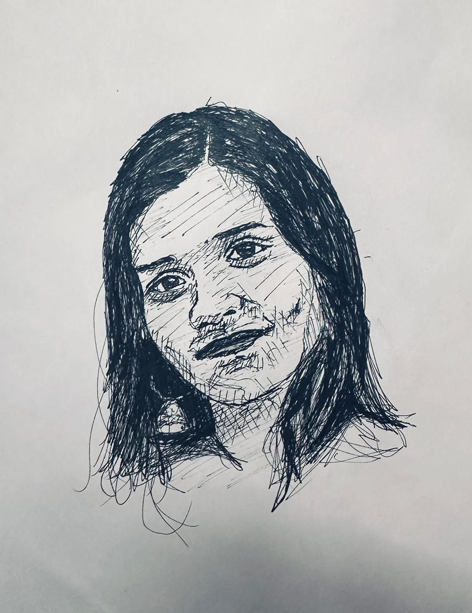

Sruthy,
Ofcourse you'd be thinking why would anyone do so much for someone they met barely couple of days back?
Is it love? Or is this a joke? Onnum angott mansalavunundavila.
Enikk oraalod samsarikkumbo, I get to understand a lot more about them. And let me be straight, I honestly feel that you are such an amazing soul. Ne ennod thurann paranja orupaad sangadangal, athinte aazham ethra unden I could relate to a small extent. I believe today's world has lost its purity, be it in love, compassion or understanding. We see good people suffer and bad ones live a perfect life. From what I've known about you, I felt that not a lot of them try to understand you. Indeed it is easy to love, but being loved is a blessing. We met as strangers and I hope we are good friends, and no matter what life has kept for us tomorrow, even if we turn out to be at the extreme dimensions of the map, I want you to always remember that there's always, atleast me, as a well-wisher of yours throughout your life from here.
Look around during your best of times, and you will see that everyone, even people that hate you will be there for you. On the contrast, if at any point you badly want someone to talk, Or to throw up, or to lend you a shoulder, or atleast to just be there, reach out to me and I promise I'll be there. Even if there is nothing that i can possibly do, I'd definitely have got your back.
I was hospitalized yesterday, have my university exam today and if i am writing this to you, if I've got you what's below inspite of all trauma, may it be little or big, just trying to let you know that ini angott, you'll never be any less important than you are right now for me.
Tomorrow indeed is a mystery, and we may even be separated forever, but remember that you matter, you always did, and that I believe you're good enough.
I honestly want to see you in flying colours, living a much happier life which i believe you deserve the most, sooner or later, with or without me. I'm grateful to have had met you. However, I wouldnt ask you to trust me, or to keep any attachments or commitments between us. Onnum venam en ila. Just promise me you'll always be happy, and will never let anything or anyone take you down, ever. May this be the day, where you draw a boundary to your entire past, and restart towards a brighter colourful life ahead, for which I would always to be a part of. Happiest birthday my friend <3.
